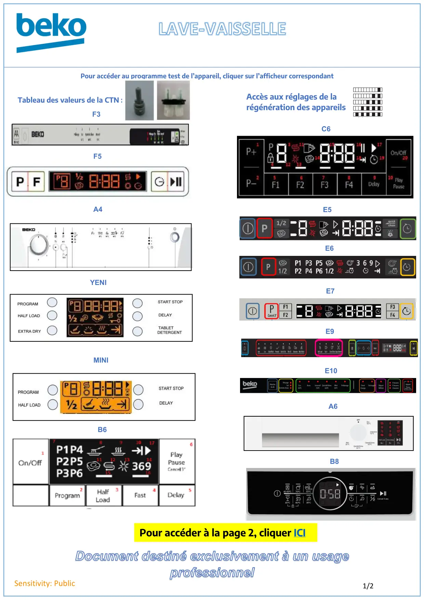

Lave vaisselle page accueil

Document destiné exclusivement à un usageprofessionnel1/2Sensitivity: PublicPour accéder au programme test de l’appareil, cliquer sur l’afficheur correspondantF5F3A4YENIMINIB6C6E6E5E7E9E10Tableau des valeurs de la CTN :A6B8Pour accéder à la page 2, cliquer ICIAccès aux réglages de larégénération des appareils
1 / 1Liens de ce document (16)
≡Lave vaisselle page accueil Page 2Menu · 3 liensPDFProgrTest Réglages LVI F5 Fr6 p.PDFProgrTest Réglages LVI F3 Fr2 p.PDFProgrTest Réglages lave vaisselle A4 Fr5 p.PDFProgr.Test.lave vaisselle Yeni Minimarti6 p.PDFProgr.Test Réglages lave vaisselle B65 p.PDFProgr.Test Réglages lave vaisselle C66 p.PDFMode test lave vaisselle E62 p.PDFProgr.Test Réglages lave vaisselle E5 Fr2 p.PDFProg Test lave vaisselle Electronique E73 p.≡Lave vaisselle electronique E9 AccueilMenu · 3 liensPDFProg Test Electronique E103 p.PDFProg Test lave vaisselle Electronique A61 p.PDFProg Test Electronique B82 p.PDFTableau Valeur CTN lave vaisselle1 p.≡Régénération pour FLS et DriveMenu · 12 liens